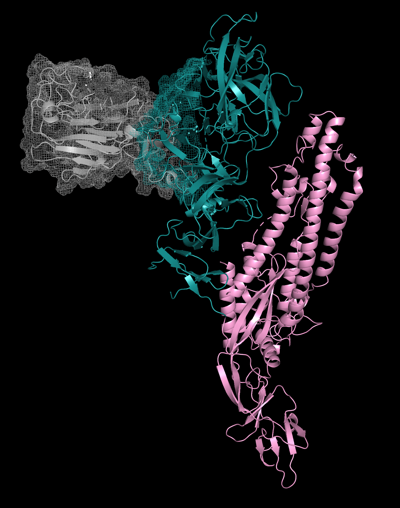

Research Programs
Each program addresses a critical knowledge gap in our understanding of FCoV-23 FIP.
Epidemiology
- Determine routes of transmission of FCoV-23
- Determine if FCoV-23 is a direct horizontally-transmitted virus
- Perform surveillance within and beyond Cyprus
- Determine risk factors for transmission
Virology
- Assess virus evolution in individual animals and populations
- Determine virus stability in the environment
- Determine host and target cell range
- Create a molecular clone of FCoV-23
Diagnosis
- Develop molecular (PCR) and serological tests that distinguish feline coronavirus strains
Treatment
- Establish standard of care for FCoV-23 anti-viral therapy
- Determine treatment outcomes for different forms of FIP caused by FCoV-23
Prevention
- Evaluate immunogenicity of oral and parenteral vaccine platforms
- Identify immunogens with potential for protection across feline coronavirus strains
Pathogenesis
- Determine presence of neutralizing antibody and impact on FCoV-23 pathogenesis
FCoV-23 Spike Protein
Cryo-electron microscopy reconstruction of the FCoV-23 spike protein in 'long' form. Pink is the fusion domain (S2), blue is the receptor binding domain (S1, sub-domains A–D). In gray is S1 sub-domain 0 — a domain absent in FCoV-23 which may explain the enhanced cell-to-cell fusogenic spread of FCoV-23 FIP.
This structural work underlies our vaccine and therapeutic development programs, providing atomic-level targets for intervention.

Cryo-EM reconstruction of FCoV-23 spike protein. Image: FCoV-23 IRC / Cornell University
Scientific Resource Cores
Shared infrastructure supports all six research programs, ensuring consistent methods and maximum efficiency of the collaborative grant.
Genetics Core
Shared genomic sequencing and bioinformatics resources supporting viral evolution and host genetics programs.
Biobank Core
Centralized biorepository of clinical samples from Cyprus, enabling cross-program access to biological specimens.
Administrative Core
Coordination, data management, and communication infrastructure supporting all international research teams.